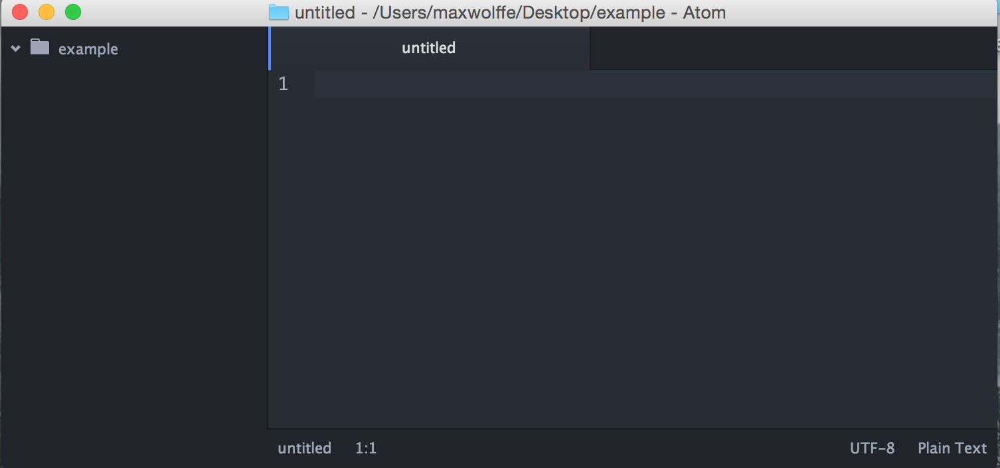

Atom
Introduction
Atom is an open source text editor developed by GitHub. It's a modern text editor like Sublime Text, but unlike Sublime, it's free to use.
Install
Visit https://atom.io and follow the instructions to install it on your computer.
Example: greet.py
Alright, by now, you should have Atom installed. You have the option
of either finding the Application or opening it up from the terminal.
Recall from Lab 0 that you can open a terminal on the school
computers by pressing Ctrl-Alt-t.
Let's first create and navigate to a directory called example, using
the UNIX commands you learned in Lab 0:
mkdir ~/example
cd ~/exampleOpening a project
Now let's open up Atom!
For Ubuntu or Mac users, you'll most likely find Atom in your
Applications.
For Windows users, you'll most likely find Atom in your
Program Files.
Click on "File > Add Project Folder..." in the menu bar. Highlight the
example folder you just made and open it. It should appear in the sidebar
as an empty folder.

Editing files
Now we have Atom open, we can begin writing our first Python file. Don't worry, we don't expect you to know any Python yet! All you have to do is type in the following:
def greet(name):
print('Hi', name, ', how are you doing?')
print(' - Python')Once you've finished typing, Atom should look something like this:

To save, you can just type ctrl + s. If you haven't already, save
this file as greet.py in the example folder. Notice that it appears in the
sidebar under example!
This will be helpful for navigating projects that are more than one file.
Running Python
In this class, you will be switching between your text editor and Python a lot — writing code and testing code.
Back in our terminal, we're currently in our example directory.
Let's play around with our code. In the terminal, start by typing
python3 -i greet.pyThis command does the following:
python3is the command that starts Python- The
-iflag tells Python to start in interactive mode, which allows you to type in Python commands from your terminal greet.pyis the name of the Python file we want to load
Notice that the Python interpreter says >>>. This means Python is
ready to take a command.
Recall that we defined a function called greet. Let's see what it
does! Type in the following:
greet('Michelle')Python will then print out
Hi Michelle, how are you doing?
- PythonOur code works! Let's close Python by typing in
exit()There are a couple of ways to exit Python. You can type in
exit()orquit(). On MacOS and Linux, you can also type inCtrl-d(this doesn't work on Windows).
Congratulations, you've edited your first file!
Keyboard Shortcuts
For Mac users, replace all the ctrl sequences with cmd
ctrl+s: saves the current filectrl+z: undoctrl+y: redoctrl+[: indent a line or a group of linesctrl+]: dedent a line or a group of linesctrl+tab: moves you to the next tabctrl+shift+tab: moves you to the previous tabctrl+f: search for a wordctrl+shift+f: searches through all tabsctrl+shift+p: This one's important. This opens up a little panel of tools! You can do things like type "ss python" which will set the syntax of your file to python or "reindent" will help you reindent a file you paste in (this will be helpful in future labs!)
This guide only scratches the surface of all of Atom's functionality. If you are interested in diving deeper into Atom, check out it's documentation! Remember, if there's something you wish Atom could do, it probably can! Just Google it!